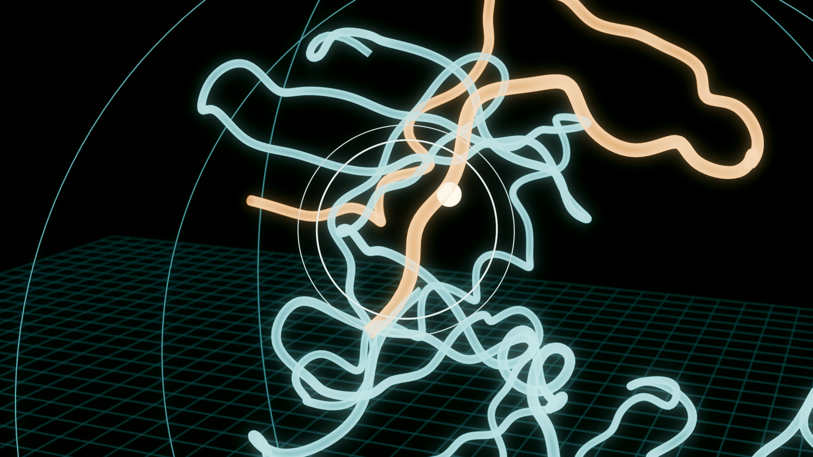
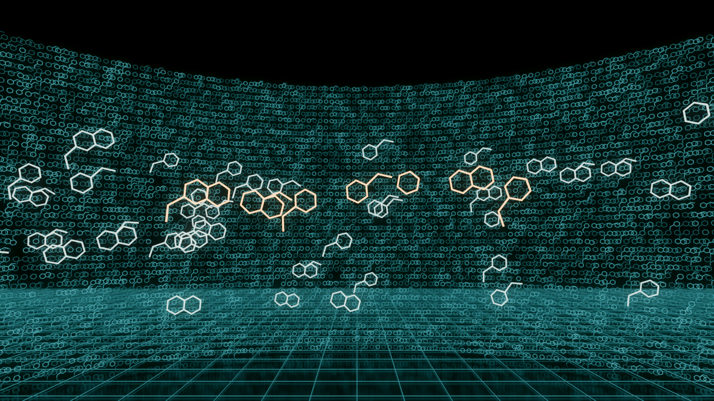

一个从香港开始的研究：AI 怎样帮科学家在动手之前，找到一个值得做出来测试的分子，以及这个分子到底证明到了哪一步。


两张都是在你的 5080 上用 Blender 直接渲染的效果测试，还没加界面文字和讲者。
组员在校园、实验室、图书馆，以及科学园外景。自然光，色调偏暖。对着镜头只说一两句短话，用现场声音。开场和结尾的新闻、手机、挂锁也都是实拍。
深蓝暗场里，讲者用手势操作全息影像，手的位置靠 MediaPipe 逐帧追踪，影像跟着真手动。这部分只拍动作，讲解后期补录画外音。全片 6 个重点镜头都在这一层。
数字、对比、证据层级、论文原图，用清楚的 2D 和 3D 讲。不加特效，让人读得清。全部引用就近标注，片尾给 ACS 格式的完整书目。
| 时间 | 段落 | 讲者 | 画面层 | 内容 | 声音 |
|---|---|---|---|---|---|
| 0:00–0:50 | 冷开场 | A | REALH1 | 深夜，手机刷到“AI 30 天设计出肝癌新药”。A 抬头说一句：真的吗？切到全息实验室，A 一推手，片名在空中点亮。 | The Weeknd 原曲片段，无讲解 |
| 0:50–2:10 | 为什么关心 | A | REALEXPLAIN | 香港的肝癌负担 数据待查；回到实验二，我们亲手给癌细胞加过 drug X；一种新药平均要 10–17 年、约 28 亿美元，进入临床的化合物约一成能上市（Wang 2023；Lecture 1c 的研发五步骤）。 | 同期短句 + 画外音 |
| 2:10–3:20 | 问题、目标、方法 | A | HOLOH2 | 研究问题和 Tutorial 1 交的两个目标；文献方法与两条来源评价标准（讲义要求放在引言）；A 挥手展开全片路线环。 | 画外音 |
| 3:20–5:00 | 靶点从哪里来 | A | REALEXPLAIN | 香港线：中大团队用威尔斯亲王医院的样本，发现 52 例肝癌中 36 例 CCRK（即 CDK20）升高（Feng 2011）。2023 年 AI 平台用 10 组数据（1,133 份肿瘤、674 份健康样本）给靶点排序，选中 CDK20：和肝癌关联强、没有实验结构、也没有获批药物。挂锁登场：靶点是锁，分子是钥匙。 | 同期短句 + 画外音 |
| 5:00–6:10 | 工具箱与“暗靶点” | B | HOLO | B 接过挂锁。计算工具箱：对接、分子动力学、量子力学、化学信息学、机器学习（老师课件第 47 页）。问题：这把锁没有照片，怎么配钥匙？ | 同期短句 + 画外音 |
| 6:10–8:00 | 钥匙孔被堵住 | B | REALH3 | B 在电脑上打开 AlphaFold 数据库查 CDK20（真实录屏），结构从屏幕里拉出来变成全息影像。按置信度上色，发现低置信尾巴里的 Arg305 堵在 ATP 口袋；B 捏住尾巴拉走，口袋露出来。2024 诺贝尔化学奖一句带过。 | 画外音，音乐抬起 |
| 8:00–9:20 | 配钥匙机 | B | HOLOEXPLAIN | Chemistry42 按口袋形状生成新分子，规则是必须抓住铰链处的 Met84。设计越来越多，汇成 8,918 个。 | 画外音 |
| 9:20–10:40 | 筛选墙 | C | HOLOH4 | C 接过钥匙。8,918 个设计组成弧墙，C 挥手：对接打分像波纹扫过，聚类成组，54 个被拉近，化学家选 7 个做出来。 | The Weeknd 片段（不压讲解） |
| 10:40–12:00 | 第一把钥匙 | C | REALEXPLAIN | 7 个里 1 个结合：001，Kd 9.2 µM。从选靶点到这一步用了 30 天，对比前面的 10–17 年。但它插得进、拧不动：酶活性 IC50 > 6,000 nM（实拍挂锁特写）。 | 同期短句 + 画外音 |
| 12:00–13:30 | 第二轮 | C | HOLOH5 | C 在全息影像里改钥匙：两种设计思路，048 多抓住 Lys33，结合强 15 倍（566.7 nM），酶 IC50 33.4 nM；第二轮也在 30 天内完成。细胞：肝癌 Huh7 比对照 HEK293 敏感约 8 倍，接回 Lecture 1c“化疗分不清癌细胞和正常细胞”。 | 画外音 |
| 13:30–15:00 | 证据到哪一级 | D | HOLOH6 | D 接过阶梯卡，全息证据阶梯点亮到“细胞”为止。局限：预测会错；没有公平对照，提速多少不知道；体外不等于体内（老师 Tutorial 2 的原例）；研究由开发平台的公司做，论文已声明利益关系。 | 同期短句 + 画外音 |
| 15:00–16:20 | 收益 | D | EXPLAIN | 健康、经济、伦理、环境四格（老师课件第 49 页），每格分“这次展示了”和“可能，但没测”；环境一格同时算计算耗电。 | 画外音 |
| 16:20–17:10 | 未来方向 | D | EXPLAIN | 四条：同靶点同预算的公平赛跑；更多生物学验证（动物模型、选择性、ADME）；用实验结构检验预测；公开失败数据，让模型学得更好。 | 画外音 |
| 17:10–18:00 | 结论 | D 全组 | REALH6 | 逐条回答两个目标；两条带走的信息；D 把开场那条新闻拉进全息阶梯，它停在“结合”这一级。四人同框收尾。 | 同期 |
| 18:00–18:40 | 片尾 | — | EXPLAIN | ACS 格式参考文献、图源许可、音乐署名、AI 使用说明。 | The Weeknd 片段 |
讲者时长：A 约 5:00（含开场），B 4:20，C 4:10，D 4:30 加全组收尾。所有数字都对照过 Ren 2023 原文；香港的发病数据还没查到可靠出处，查到前不进稿。
每个手势都对应一个真实的科学步骤，不做纯装饰的特效。
对着镜头的短句用现场声音，句子短到说错一句重来就好。加拍补充画面：查 AlphaFold 网页、手机、挂锁、钥匙、校园走路。实验室镜头要先问助教能不能拍。
每人拍自己负责的 1–2 个重点镜头，只做动作不讲话。我会做一个网页预演工具：电脑摄像头实时叠上全息画面，拍的人看着屏幕就知道手往哪推、眼睛看哪。
剪出粗剪后，按画面长度录画外音。这样每句的时长是先定好的，不会超时。